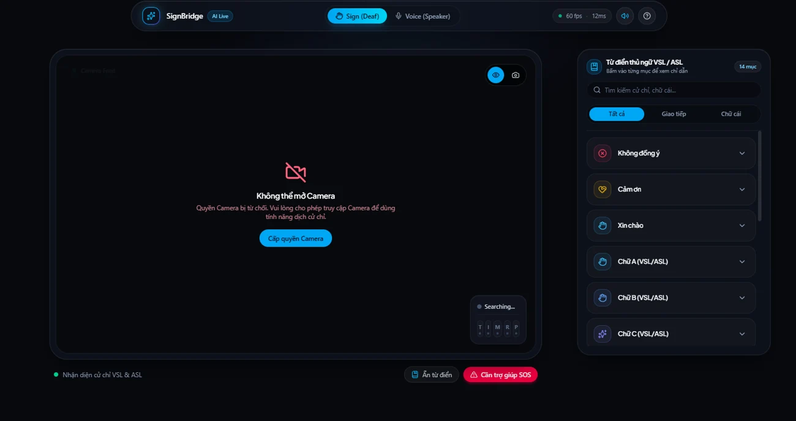

SignBridge AI SignBridge AI
Cầu nối giao tiếp hai chiều thời gian thực cho người khiếm thính bằng Computer Vision & Multimodal AI. Real-time two-way communication bridge for the deaf & mute community powered by Computer Vision & Multimodal AI.

Hình ảnh & video Product previews

Giao diện chính của SignBridge AI: Camera nhận diện cử chỉ VSL/ASL thời gian thực (60 fps, 12ms), đọc to bằng giọng nói và từ điển thủ ngữ tích hợp. SignBridge AI main interface: Real-time VSL/ASL hand gesture recognition camera (60 fps, 12ms), voice synthesis readout, and integrated sign dictionary.
Giới thiệu Overview
[?] Vấn đề: Rào cản ngôn ngữ của cộng đồng người khiếm thính [?] The Problem: Communication Barrier for the Deaf & Mute
Trong đời sống thường nhật, hơn 70 triệu người khiếm thính trên toàn cầu gặp trở ngại to lớn khi giao tiếp với người bình thường. Rất ít người nghe biết và hiểu ngôn ngữ ký hiệu (VSL hoặc ASL). Sự bất đồng ngôn ngữ này tạo nên bức tường cô lập tại trường học, bệnh viện, nơi làm việc và đặc biệt nguy hiểm trong các tình huống khẩn cấp cần trợ giúp tức thì. Across the globe, over 70 million deaf and hard-of-hearing individuals encounter major obstacles communicating with hearing peers. Very few hearing people know Sign Language (VSL or ASL). This communication breakdown creates isolating friction in classrooms, hospitals, workplaces, and during critical emergencies where instant understanding saves lives.
[!] Giải pháp: SignBridge AI: Cầu nối thông minh hai chiều [!] The Solution: SignBridge AI: Two-Way Intelligent Bridge
SignBridge AI được xây dựng tại hackathon AI Riser Vietnam x LotusHacks bằng công nghệ từ Google AI Studio. Ứng dụng biến bất kỳ webcam máy tính hay camera điện thoại thành người phiên dịch cá nhân thời gian thực: quét chuyển động bàn tay, dịch ngôn ngữ ký hiệu (hỗ trợ cả VSL - Ngôn ngữ ký hiệu Việt Nam và ASL - Ngôn ngữ ký hiệu Mỹ), và đọc to thành âm thanh thông qua Web Speech API để người bình thường nghe và hiểu ngay lập tức. Built during the AI Riser Vietnam x LotusHacks hackathon using Google AI Studio technologies, SignBridge AI turns standard webcams and phone cameras into an instant personal sign interpreter: tracking hand movements, translating sign language (supporting both Vietnamese Sign Language - VSL and American Sign Language - ASL), and reading results aloud via the Web Speech API so hearing listeners understand immediately.
ỨNG DỤNG TRỰC TIẾP: Trải nghiệm tại signbridgeai.pages.dev. LIVE APPLICATION: Experience it at signbridgeai.pages.dev.
Tính năng Features
Nhận diện thủ ngữ thời gian thực
Real-Time Sign Recognition
Camera luồng video đạt tốc độ 60 FPS với độ trễ phản hồi chỉ 12ms. Nhận diện các cử chỉ tay và chữ cái của cả hai hệ thống VSL (Thủ ngữ Việt Nam) và ASL (Thủ ngữ Mỹ).
Camera video stream runs at 60 FPS with an ultra-low 12ms response latency. Recognizes hand gestures and alphabet letters across both VSL (Vietnamese) and ASL (American) systems.
Cầu nối hai chiều: Thủ ngữ ↔ Giọng nói
Two-Way Sign ↔ Voice Bridge
Chuyển đổi cử chỉ ký hiệu thành giọng nói đọc to cho người nghe (Sign Mode) và chuyển lời nói thành văn bản hiển thị trên màn hình cho người khiếm thính (Voice Mode).
Converts hand signs into clear spoken speech for hearing listeners (Sign Mode) and transcribes spoken voice into real-time on-screen text for deaf users (Voice Mode).
Từ điển thủ ngữ tương tác VSL/ASL
Interactive VSL/ASL Sign Dictionary
Bộ từ điển tích hợp ngay trên màn hình gồm các mục giao tiếp thường dùng (Xin chào, Cảm ơn, Không đồng ý, bảng chữ cái A, B, C...) giúp người mới dễ dàng tra cứu và đối chiếu cử chỉ.
Integrated on-screen dictionary covering essential communication phrases (Hello, Thank you, Disagree, alphabet letters A, B, C...) enabling instant lookup and visual guidance.
Nút khẩn cấp SOS một chạm
One-Touch Emergency SOS
Tính năng "Cần trợ giúp SOS" phát cảnh báo âm thanh và hình ảnh khẩn cấp khi người dùng khiếm thính rơi vào tình huống nguy hiểm cần sự trợ giúp từ những người xung quanh.
Dedicated "SOS Emergency Help" button triggering urgent audiovisual alerts to instantly signal distress and request assistance from bystanders in critical situations.
Chi tiết kỹ thuật Technical details
View full technical detailsXem chi tiết kỹ thuật
| Tầng kiến trúc Layer | Công nghệ Technologies | Vai trò & Nhiệm vụ Role & Responsibility |
|---|---|---|
| Giao diện & Video Feed Frontend & Video Feed | HTML5 Canvas, WebRTC MediaStream, CSS3, Vanilla JavaScript | Xử lý luồng webcam trực tiếp ở tốc độ 60 FPS, hỗ trợ xoay camera, lật hình và giao diện tối giản thân thiện. Captures live camera feed at 60 FPS with camera switching, horizontal flipping, and an accessible high-contrast UI. |
| Bộ máy AI Thị giác Multimodal AI Vision | Google AI Studio, Gemini Multimodal API, MediaPipe Hands | Phát hiện tọa độ bàn tay, phân tích cử chỉ động và tĩnh, khớp với cơ sở dữ liệu ký hiệu VSL & ASL với độ trễ thấp 12ms. Detects hand landmark coordinates, analyzes dynamic/static gestures, and matches against VSL & ASL sign datasets with 12ms latency. |
| Tổng hợp & Xử lý âm thanh Audio & Speech Synthesis | Web Speech API (SpeechSynthesis & SpeechRecognition) | Phát âm thanh text-to-speech tức thời khi nhận diện thủ ngữ, đồng thời nhận diện giọng nói khi chuyển sang chế độ người nghe. Performs instant client-side text-to-speech upon gesture recognition and speech recognition for the hearing user mode. |
| Hạ tầng & Triển khai Deployment & Edge | Cloudflare Pages (signbridgeai.pages.dev) | Triển khai Edge tĩnh tốc độ cao, hỗ trợ HTTPS bắt buộc để kích hoạt quyền truy cập Camera/Microphone trên mọi trình duyệt. High-performance static Edge deployment with strict HTTPS enforcement required for Camera and Microphone web permissions. |